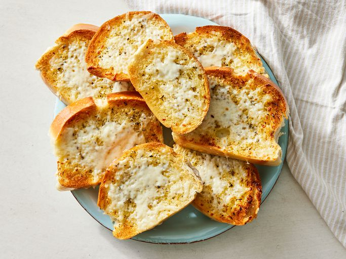

Garlic Bread

Description
This recipe is copied from the All Recipes Garlic Recipe
It will make garlic bread that one can eat with pasta, lasagna or just by itself.
I, myself, love eating garlic bread by itself and will not fault
anyone else for doing that.
Ingredients
- 1 pound of load Italian bread
- 5 tablespoons butter, softened
- 3 cloves garlic, crushed
- 2 teaspoons extra virgin olive oil
- 1 teaspoon died oregano
- salt and pepper for taste
- 1 cup shredded mozzarella cheese
Steps